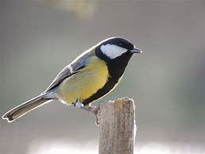

Habitat et alimentation de la mésange charbonnière
Répartition géographique :
Europe, Moyen-Orient, Asie Centrale, Afrique du Nord
Lieu de vie :
La mésange charbonnière vit dans les milieux forestiers et boisés, les forêts, les lisières, les haies, les bocages, les vergers, les prairies.
On la retrouve également dans les parcs et les jardins des villes.
Régime alimentaire :
Omnivore (insectivore, granivore et frugivore)
Type de nourriture :
La mésange charbonnière adapte son régime alimentaire selon la saison.
Au printemps et été, elle mange principalement des insectes et des araignées.
En automne et en hiver, elle mange plutôt des graines (tournesol) et des fruits.
En hiver, la mésange charbonnière est coutumière des mangeoires où elle vient se nourrir des graines qui y sont déposées.
Reproduction de la mésange charbonnière
Période de nidification :
Printemps (avril à juillet)
Lieu de ponte / nid / naissance :
Nidification cavernicole ; le nid est placé dans le trou d’un tronc d’arbre, dans la cavité d’un mur ou dans un creux au milieu de rochers. Elle peut nicher également dans des boites aux lettres ou tout simplement dans des nichoirs.
Le nid est construit par la femelle à l’aide de végétaux (mousse, feuilles, brindilles) et est tapissé de plumes et de poils.
Nombre de couvées annuelles :
1 à 2 couvées par an
Nombre d’oeufs par ponte :
5 à 12 oeufs par couvée
Durée de l’incubation / couvaison :
13 à 15 jours ; seule la femelle couve les oeufs
Sevrage :
Les petits poussins sont nidicoles. La becquée est assurée par les 2 parents. L’envol des petits se fait au bout de 3 semaines. Les juvéniles seront encore nourris par leurs parents pendant 2 à 3 semaines supplémentaires.
